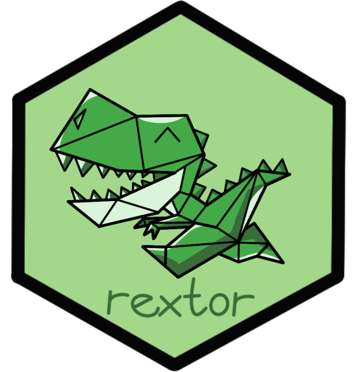

rextor 
rextor is an R package to facilitate data preparation for data collected on WEXTOR. It offers functions to read in the data, help visualize the data with color themes and scales that can help show data with a light-on-dark color scheme, as well as a helper function. Here, the dinosaur Rex will offer some words of wisdom and advice.
Installation
You can install the development version of rextor from GitHub with:
# install.packages("devtools")
devtools::install_github("iscience-kn/rextor")Ask Rex 🦖
You can ask Rex for specific topics, such as t.tests and they will ask you to specify the exact type of statistic you are looking for. If you are generally having a hard time, just ask Rex for nothing in particular and they will give you some encouragement to help you to try again!
Read in WEXTOR data
If you are not yet familiar with WEXTOR: It is an online experiment building tool which relies on standards of web-based experimentation and methodological best practices.
That means, generating studies to collect data is easy but analyzing that data in R might be tricky. WEXTOR data comes in a specific csv^comma-separated-values format and figuring out how to properly read that data into R can be difficult to do when starting out your R journey.
Luckily, with rextor, reading in that data becomes easy as well! We will use an openly available data set on personality data collected in three different conditions^For more information on the data, see github.com/iscience-kn/BiFiX. Because some of the automatically generated variable names are not ideal for usage in R, we will also identify any variable name that starts with “.wx.” and have those names start instead with “v_” for “variable”.
raw_data <- read_WEXTOR("./data/BiFiX_data.csv", keep_validation = FALSE)
personality <- namepref(raw_data, ".wx.", "v_")This way, the data frame personality is now nicely formatted with useful variable names ready to be edited further. For example, we recommend conducting dropout analysis as a routine part of analyzing online data and offer the dropR package to facilitate such analyses!